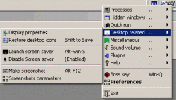
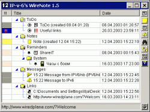

|  | WireKeys Full - System utility that helps you to work in Windows. Hot key oriented with extensive tray menu support. Features: Additional text clipboards, Screen shot making, Kill non-replying tasks, Minimize any application to tray and more. Every action can be connected to the hot key, full "Win" key/Multimedia keyboards support |
|  | WireNote - Smart and simple data manager (ToDo list, Reminders and sticky notes (note can be attached to any other application`s window for example)) with high-quality LAN messaging support (including send/receive files over the net, message filtering). This program was created to help in organization of daily work with such features as ToDo/Reminders and sticky notes service along with address book and LAN messenger. The kernel of the program is easy-to-use tree-structured data holder. This program can be used instead of standard Windows messaging service or WinPopup. |